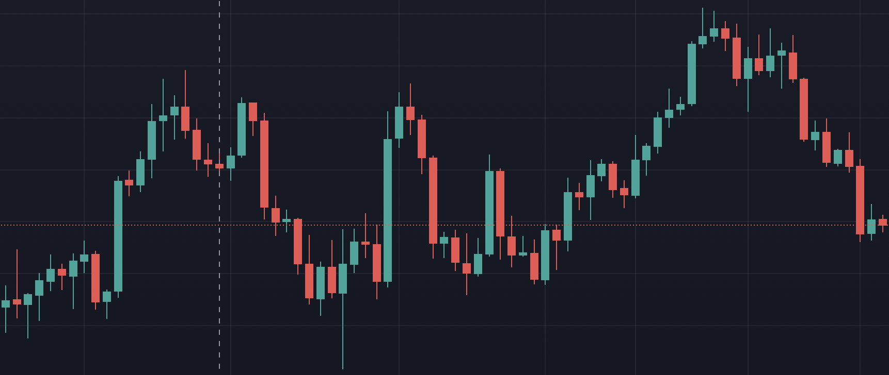

Projects
Real-Time Detection of Damages in Jersey Barriers
Date: 04/2024Technologies Involved: Python, Deep Learning, OpenCV, Tensorflow, Pytorch, Docker, MLOps, Quantization.
The project focuses on developing an advanced algorithm for the automated detection and classification of defects in Jersey barriers along Italian highways. This algorithm is part of a comprehensive system that captures images using cameras mounted on the roof of a moving vehicle, analyzing them in real time.
The algorithm identifies the segments of guardrails to be examined and detects damaged Dywidag elements. Upon identifying a damaged element, the system promptly sends a notification to designated brokers, ensuring timely maintenance and repair actions.
Key features included:
The algorithm identifies the segments of guardrails to be examined and detects damaged Dywidag elements. Upon identifying a damaged element, the system promptly sends a notification to designated brokers, ensuring timely maintenance and repair actions.
Key features included:
- Segment Identification: Accurately isolates Jersey barrier segments for inspection.
- Defect Detection: Targets damaged Dywidag elements using advanced image processing and machine learning techniques.
- Real-Time Analysis: Ensures immediate identification of anomalies with high processing speed.
- Notification System: Sends instant alerts with geolocation data and images to maintenance teams upon detecting defects.
- Data Logging and Reporting: Generates detailed reports on defect types, frequencies, and locations for predictive maintenance.
Orchestration System for Monitoring and Managing Unsupervised RPA Processes
Date: 06/2023Technologies Involved: Python, Pandas, Numpy, Docker, MySQL, DevOps, Flask.
This project involves the development of an advanced Orchestration system designed to manage and monitor unsupervised Robotic Process Automation (RPA) processes. The primary goal was to enhance operational efficiency by automating routine tasks that do not require human oversight while maintaining the capability for real-time remote monitoring and control.
In a typical use case, the system automates general purpose processes interacting with external sources, updating the platform’s database with the latest information. Authorized users can interact with the system through a secure interface to initiate processes or retrieve status updates. The orchestrator manages the workflow and oversees the execution of tasks by individual RPA processes. The system continuously monitors performance and logs activities, providing notifications in case of errors or significant events, ensuring smooth and efficient operations.
Key features included:
In a typical use case, the system automates general purpose processes interacting with external sources, updating the platform’s database with the latest information. Authorized users can interact with the system through a secure interface to initiate processes or retrieve status updates. The orchestrator manages the workflow and oversees the execution of tasks by individual RPA processes. The system continuously monitors performance and logs activities, providing notifications in case of errors or significant events, ensuring smooth and efficient operations.
Key features included:
- User Interaction Management: The system handles user interactions via secure HTTPS and WebSocket connections, ensuring encrypted communication and real-time status updates.
- Orchestrator Component: Acts as the central controller, managing the automation processes, job queues, configuration modifications, and supervising processes activities. Facilitates the management and execution of processes, including starting, stopping, and updating configurations, while ensuring secure communication through a shared Docker network.
- Autonomous Task Execution: Robots execute specific tasks autonomously, such as data extraction, processing, and interaction with external APIs, ensuring tasks are completed efficiently without manual intervention.
- Real-time Monitoring and Logging: Utilizes robust logging and notification mechanisms to monitor system health, detect anomalies, and provide real-time updates to users.
- Error Handling and Loop Detection: Implements mechanisms to detect and handle errors, including persistent loop states, ensuring system stability and resource optimization.
- Batch Processing: Processes tasks in batches to optimize system performance and prevent overloading, ensuring efficient handling of large data sets.
- Statistical Analysis: Calculates estimated time of arrival (ETA) and completion percentages for ongoing processes, providing clear visibility into process progress and performance.
- Scalable Architecture: Designed for scalability and flexibility, the system utilizes containerization with Docker to ensure isolated and efficient execution environments for each component.
CryptoBot
Date: 04/2022Source Code: GitHub
Technologies Involved: Python, Binance® API.
This project is a free and open source trading bot written in Python,
designed to operate over different cryptocurrencies simoultaneously on the Binance® Spot Exchange.
The purpose is to collect real time data of different symbols, compute statistical
indicators, and select the most promising one according to the selected entry strategy. More in details,
the bot is designed to execute many buy and sell transactions, each one with a fixed profit, taking advantage
of compound interest by investing all the available balance with each operation.
Key features:
Key features:
- Realtime data collecion and processing.
- Scalable to different trading strategies and symbols.
- Integration with Discord® notifications.



Pluto
Date: 04/2021Source Code: GitHub
Technologies Involved: Arduino uno, Raspberry Pi, C++, Python, Node.js, Javascript, HTML, CSS.
Pluto is a robot built to engage people to visit the virtual exposition of the space exhibition at
the Museo Nazionale Scienza e Tecnologia Leonardo da Vinci during the Covid pandemic.
The objective was to create one single robot, easy to use, that could be deployed by anyone who
reads the simple manual and that accomplish two different missions:
- First scenario is during covid, so the idea was to attract people at train stations, or semi-public areas with the objective of getting peoples attention and inviting them to visit the virtual exposition.
- The second one was to be placed inside the museum after it opens, being part of the exhibition itself.
SharkIO
Date: 02/2021Source Code: GitHub
Technologies Involved: HTML, CSS, Javascript, Node.js, MongoDB.
SharkIO is a Web Application which allows users to subscribe and manage their subscription to a generic digital service (in this case a google chrome extension).
To access the service users have to login with their Discord Account. Once logged in, they can subscribe to the service by paying with their credit card. The payment
flow has been implemented by using Stripe's technologies. In this case, the subscription is composed by an initial setup fee, plus a recurrent monthly payment. Once that
users are subscribed to the service, they can access their personal dashboard, through which thay can retrive all the information related to their subscription, or perform
some actions such as:
- Manage their subscription.
- Join the Official Discord's Server of the Service.
- Unbind their license from their current Discord Account.
- Reset the IP address on which the software is binded.


CryptoSimulator
Date: 01/2021Source Code: GitHub
Technologies Involved: React Native, Tensorflow, Expo, Firebase, Javascript, Node.js, Python, Google Cloud Platform.
CryptoSimulator is a cross-platform mobile application for monitoring and
forecasting the trend of cryptocurrencies over time. It allows users to be
always up to date on the value of the most important cryptocurrencies by
exploiting interactive graphs and plots. By the implementation of AI algorithms
it allows users to monitor and predict cryptocurrency’s trends and simulate
the future of their preferred assets. In other words, thanks to an artificial
intelligence engine, based on a recurrent neural network trained to predict future trends,
CryptoSimulator helps users to make decisions about when to sell or buy the desired assets
in order to maximize profits and reduce losses. The application expands its functionalities
by allowing users to authenticate and to create and manage their personal wallet with the
cryptocurrencies owned. In particular, users can always be up to date on the current
value of their wallet and understand how it could evolve over time thanks to the
predictions made by the AI.
Mask Recognition
Date: 11/2020Source Code: GitHub
Technologies Involved: Python, Tensorflow.
The project is dedicated to solve an image classification problem on a proposed dataset.
In particular, the purpose is to classify images depicting groups of people based on the number of masked people.
In the specific, the solution must discriminate between images depending on the following cases:
- All the people in the image are wearing a mask.
- No person in the image is wearing a mask.
- Someone in the image is not wearing a mask.